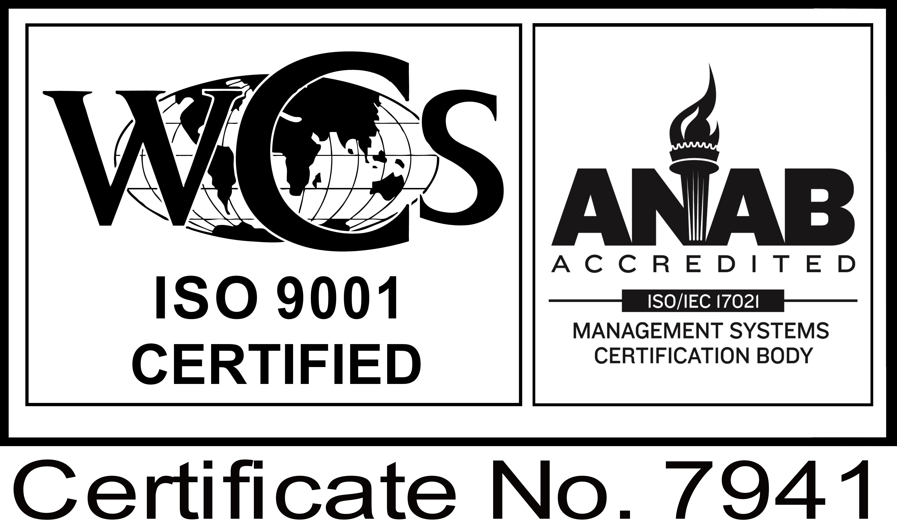

Our Commitment to Quality
As of 2016, we are officially ISO 9001:2015 certified to "fabricate prototype and short-run production parts using precision machining, EDM solutions, and injection molding techniques.
This certification is another step along the path of continuous improvement in order to better serve our customers. Our company emphasizes a firm commitment to top quality, as described in our Quality Policy:
Our goal is to be a leader in Prototype to Production Engineering and Process Development by assembling a team of the finest people, systems and equipment to provide our customers with the best quality, value, and service through continuous improvement.